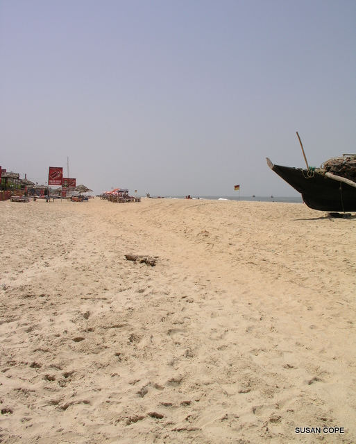
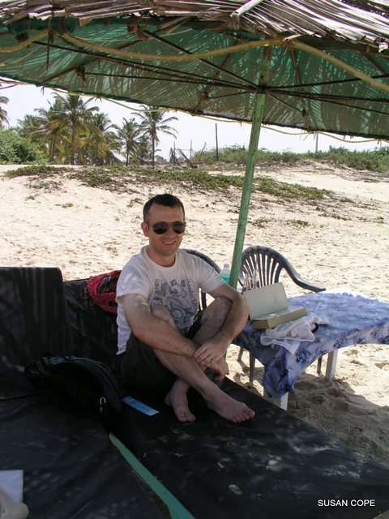
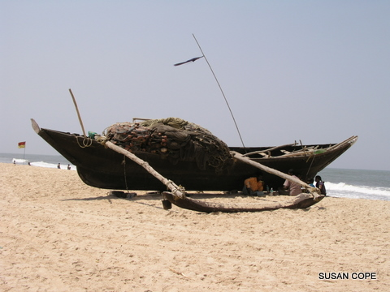

April 04, 2011 • Goa, India • by sue_and_nathan
10 years on
Goa, India
Today Yearaway.com is officially 10 years old! It was 10 years ago, on April 4th 2001, that we set off on our extended honeymoon and what a honeymoon it turned out to be.
In those 10 years we have seen some amazing places, stayed at more special hotels than I ever expected to stay at in a lifetime, eaten tonnes of great food and enjoyed a myriad of new experiences. We picked one of those special hotels to return to for our 10th wedding anniversary – Palm Grove Cottages in Benaulim, Goa - the very same hotel where we had enjoyed long days of relaxation towards the close of our honeymoon.
Nothing much seems to have changed in Benaulim or indeed at Palm Grove. There is the same sleepy feel to the village, albeit it with a few more shops and a sprawling apartment complex, and the hotel is still surrounded by lush green gardens, beautifully tended to by a ‘mali’ under the watchful eye of the owner Christhe. The only change at Palm Grove is the addition of a new luxury wing, which of course we opted for (we’re no longer back-packers you know!). Our favourite memory of Palm Grove was being awoken by bird calls and indeed on our first morning we awoke to those same familiar sounds.
Much like our stay 9 years ago, we spent our time in Goa doing very little. We walked down to a Goan-run beach shack called Sea View for a fresh fish lunch every day, availed of their sunbeds and umbrella post-lunch, siesta-d at the hotel in the afternoon and then returned to Sea View for a sun-downer and dinner a little later on. This was a perfect break; an extremely well-deserved one when you live in Bombay, known as ‘Maximum City’ for good reason!
Saying that, we were, as always, happy to return to our newly adopted city – just in time to watch India win the World Cup against Sri Lanka and join the partying crowds as they thronged onto the seafront near our home. Here in India cricket is such a huge thing and so the national team winning this major event meant people left their homes to join the millions of other people on the streets, cheering, singing and dancing, letting off fire-crackers, hooting horns, riding on the roofs of buses, cars and even rickshaws, and shaking hands. There was absolute gridlock throughout Bombay until the early hours of the morning, and spontaneous street parties in every corner of this amazing country. And you know what, we were lucky enough to be here, in the heart of it, to share something that India has been waiting 28 years for.

Imagine that... somewhere devoid of crowds and in India too!

A book, a beach... the perfect way to relax!

Recently returned fishing boat on Benualim Beach